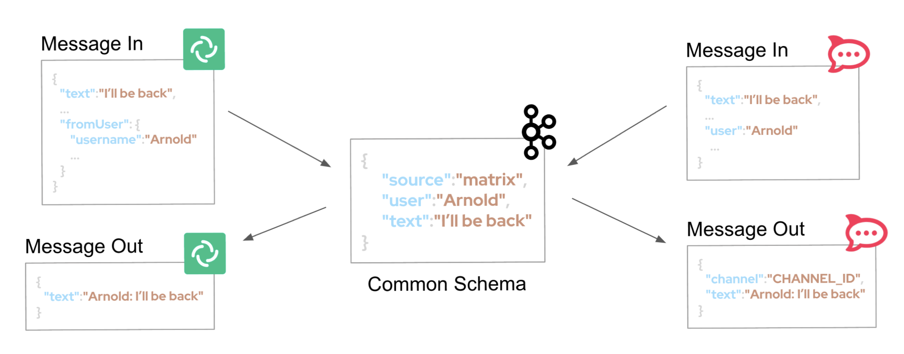

Architecture
This section provides a comprehensive look at the technologies, architectural patterns, and design decisions that enable the AI-powered application integration platform.
Technology Stack
Red Hat OpenShift Container Platform, Red Hat OpenShift Data Foundation, Red Hat Application Foundations, and connectivity solutions combine to deliver a unified platform for AI-powered integration.
-
Red Hat Application Foundations
-
Red Hat build of Apache Camel: A versatile toolkit for streamlined application integration that simplifies connecting diverse systems. Runs in Quarkus and Spring Boot runtimes with optimized performance and fast startup.
-
Red Hat Streams for Apache Kafka: Based on the Apache Kafka project, offers a distributed backbone for microservices and applications to share data with high throughput and low latency. Enables event-driven architectures and system decoupling.
-
-
Red Hat OpenShift: A unified application platform for building, modernizing, and deploying applications at scale on hybrid cloud infrastructure.
-
Red Hat OpenShift Data Foundation: Persistent software-defined storage integrated with OpenShift, providing S3-compatible object storage for archival and document management.
-
Red Hat Connectivity Link: A secure, scalable API gateway solution enabling authentication, authorization, and rate limiting across services. Built on Kubernetes Gateway API and Kuadrant for cloud-native governance.
-
Red Hat Service Interconnect: Secure connectivity solution allowing applications in OpenShift to access databases and services on separate infrastructure without exposing them to public networks. Enables zero-trust application-level connections.
An in-depth look at the solution’s architecture
The architecture integrates data ingestion, event-driven messaging, AI-assisted automation, and governance into a unified platform. Each capability addresses a specific challenge while building on the layers beneath it.
Secure Data Ingestion
Backend databases often reside on infrastructure separate from cloud environments — legacy on-premises systems, managed database services, or security-isolated namespaces. Exposing these databases to public networks creates security vulnerabilities. Traditional VPN configurations add operational complexity and require firewall rule management across teams.
Red Hat Service Interconnect solves this by establishing encrypted, application-level connections between OpenShift and remote databases. No VPNs. No exposed ports. The solution creates a local Kubernetes service proxy that transparently forwards traffic to the remote database.
Service Interconnect uses a set of resources to establish and manage the connection. Here’s how it looks:
| Hover over each component in the diagram to learn what it does. |
flowchart LR
subgraph yoursLabel ["Openshift"]
subgraph yours [" "]
Client[DB Client]
SVC2((svc))
subgraph S2 ["Site(2)"]
Listener((Listener))
Grant["🪪 AccessGrant"]
end
end
end
Client --> SVC2 --> Listener
S2 ~~~ S1
S2 -.-|"🔒 secure link"| S1
subgraph sharedLabel [Remote Database]
subgraph shared [" "]
subgraph S1 ["Site(1)"]
Connector((Connector))
Token["🔑 AccessToken"]
end
SVC((svc))
SVC --- DB[(Database)]
end
end
Connector --> SVC
Grant ~~~ Token
style yoursLabel fill:none,stroke:none
style sharedLabel fill:none,stroke:none
style S2 fill:#e8eaf6,stroke:#7986cb
style S1 fill:#e8eaf6,stroke:#7986cb
style Grant fill:#fff,stroke:#7986cb
style Listener fill:#fff,stroke:#7986cb
style Token fill:#fff,stroke:#7986cb
style Connector fill:#fff,stroke:#7986cb
style DB fill:#336,color:#fff
| The database lives in a secure, air-tight environment — no inbound ports are exposed. To keep it that way, the link is initiated from the database side outward to your site. This is why you create an AccessGrant on your side: it gives the database site permission to connect to you and establish a bidirectional communication link. Its environment never opens an entrypoint that could be exploited. |
Once configured, Apache Camel integrations connect to the database as if it were local — standard PostgreSQL connection strings, no special network configuration. The Service Interconnect layer handles routing, encryption, and access control beneath the application.
This pattern extends to multi-site deployments spanning clusters, regions, and cloud providers. Sites discover each other through credentials (AccessGrant/AccessToken), creating secure meshes that persist across all exposed services.
Beyond this demo: Service Interconnect at scaleIn the real world, Service Interconnect shines when connecting services across multiple clusters, regions, and cloud providers — all sharing the same secure mesh. Consider a retail organization with stores across different regions, each running AI-powered services. Edge sites collect training data and run inference against locally deployed models. Redundant on-prem data centers handle the heavy lifting — training new AI/ML models and pushing updated versions back to the stores. Regional hubs aggregate traffic from nearby edges before forwarding it to the core. flowchart LR
subgraph left [" "]
direction TB
subgraph E1L ["London"]
E1["AI data →\nAI model ←"]
end
subgraph E2L ["Berlin"]
E2["AI data →\nAI model ←"]
end
end
HL((Hub\nFrankfurt))
subgraph coreLabel [" "]
direction TB
subgraph DC1 ["Data Center 1"]
AI1(AI Model Training)
end
subgraph DC2 ["Data Center 2"]
AI2(AI Model Training)
end
end
HR((Hub\nSingapore))
subgraph right [" "]
direction TB
subgraph E3L ["Tokyo"]
E3["← AI data\n→ AI model"]
end
subgraph E4L ["Sydney"]
E4["← AI data\n→ AI model"]
end
end
E1 -.-|"🔒 N links"| HL
E2 -.-|"🔒 N links"| HL
HL -.-|"🔒 N links"| AI1
HL -.-|"🔒 N links"| AI2
AI1 -.-|"🔒 N links"| HR
AI2 -.-|"🔒 N links"| HR
HR -.-|"🔒 N links"| E3
HR -.-|"🔒 N links"| E4
style left fill:none,stroke:none
style right fill:none,stroke:none
style E1L fill:none,stroke:none
style E2L fill:none,stroke:none
style E3L fill:none,stroke:none
style E4L fill:none,stroke:none
style coreLabel fill:none,stroke:none
style DC1 fill:#e8eaf6,stroke:#7986cb
style DC2 fill:#e8eaf6,stroke:#7986cb
style AI1 fill:#fff,stroke:#7986cb
style AI2 fill:#fff,stroke:#7986cb
style HL fill:#e8eaf6,stroke:#7986cb
style HR fill:#e8eaf6,stroke:#7986cb
style E1 fill:#f5f5f5,stroke:#ccc
style E2 fill:#f5f5f5,stroke:#ccc
style E3 fill:#f5f5f5,stroke:#ccc
style E4 fill:#f5f5f5,stroke:#ccc
Each edge site pushes training data to the core and pulls updated models back. Multiple links between sites provide redundant routing — if one path fails, traffic flows through another. Hubs add a further layer of resilience: if the Frankfurt hub goes down, edges can reroute through Singapore. Redundant data centers ensure the AI pipeline stays available even during maintenance or outages. |
A typical data ingestion flow follows this pattern: the platform exposes an API endpoint via Apache Camel to receive incoming data. The integration transforms data as needed, stores it in backend databases via Service Interconnect, and generates documents that are uploaded to object storage provided by OpenShift Data Foundation. All data movement happens over encrypted connections without direct database exposure.
In the demonstration scenario, this pattern is applied to order processing: EDI purchase orders arrive at the Camel endpoint, are transformed to XML format, stored in a database, and rendered as PDF invoices uploaded to S3 storage.
flowchart LR
Customer --> Shop -->|"EDI message"| Camel
subgraph LocalEnvironment [OpenShift]
Shop
Camel --> |"① XML data"|ServiceInterconnect{{"Service\nInterconnect"}}
Camel --> |"② PDF Invoices"|Storage
end
subgraph RemoteEnvironment [Remote Environment]
ServiceInterconnect2{{"Service\nInterconnect"}} --> Database
end
ServiceInterconnect --- |"🔒 secure link"| ServiceInterconnect2{{"Service\nInterconnect"}}
Camel@{ img: "_images/integration-icon.svg", label: "Camel Integration", pos: "b", h: 80, w: 80, constraint: "on" }
Customer@{ img: "_images/customer-icon.svg", label: "Customer", pos: "b", h: 80, w: 80, constraint: "on" }
Shop@{ img: "_images/shop-icon.svg", label: "Shop", pos: "b", h: 80, w: 80, constraint: "on" }
Storage@{ img: "_images/s3-icon.svg", label: "OpenShift<br>Data Foundation", pos: "b", h: 80, w: 80, constraint: "on" }
Database@{ img: "_images/database-icon.svg", label: "Database", pos: "b", h: 70, w: 70, constraint: "on" }
style LocalEnvironment fill:#fce4e4,stroke:#EE0000
style RemoteEnvironment fill:#fce4e4,stroke:#EE0000
style ServiceInterconnect2 fill:#f8b4b4,stroke:#EE0000,color:#333
style ServiceInterconnect fill:#f8b4b4,stroke:#EE0000,color:#333
style Customer fill:none,stroke:none
style Camel fill:none,stroke:none,font-weight:bold
style Shop fill:none,stroke:none
style Storage fill:none,stroke:none
style Database fill:none,stroke:none
Event-Driven Messaging
Connecting messaging platforms directly to each other creates tight coupling. When two platforms depend on each other’s APIs, adding a third platform requires modifying both existing integrations. The number of point-to-point connections grows exponentially as the platform expands.
The architecture decouples messaging platforms by introducing Apache Kafka as a streaming backbone. Neither platform requires direct awareness of the other — they publish and consume messages through common Kafka topics. This decoupling enables independent scaling and simplifies extensibility.
flowchart LR
subgraph chatOuter ["Customer Support Platform"]
subgraph chatInner [" "]
direction LR
ChatCustomer --- |Camel| Kafka --- |Camel| ChatAgent
end
end
ChatCustomer@{ img: "_images/customer-icon.svg", label: "Customer", pos: "b", h: 80, w: 80, constraint: "on" }
ChatAgent@{ img: "_images/agent-icon.svg", label: "Support Agent", pos: "b", h: 80, w: 80, constraint: "on" }
Kafka@{ img: "_images/kafka-icon.svg", label: "Kafka", pos: "b", h: 80, w: 80, constraint: "on" }
style ChatCustomer fill:none,stroke:none
style ChatAgent fill:none,stroke:none
style Kafka fill:none,stroke:none
style chatOuter fill:none,stroke:none
style chatInner fill:#fce4e4,stroke:#EE0000
To make this pattern work cleanly, the architecture adopts a standard data model as the common language on Kafka. Instead of translating directly between platform-specific formats, each integration transforms in two steps:
-
Inbound: platform-specific format → standard data model (into Kafka)
-
Outbound: standard data model → platform-specific format (from Kafka)
This means every system integrates with one common interface, not with every other system individually. Adding a new messaging platform requires implementing only two flows: platform → Kafka (inbound) and Kafka → platform (outbound). The existing infrastructure and other integrations remain untouched.

In the demonstration scenario, bidirectional messaging between Matrix (customer-facing) and Rocket.Chat (support agents) illustrates this pattern with four distinct flows:
-
Matrix → Kafka
-
Kafka → Rocket.Chat
-
Rocket.Chat → Kafka
-
Kafka → Matrix
flowchart LR
MX -->|"flow 1"| K -->|"flow 2"| RC
RC -->|"flow 3"| K -->|"flow 4"| MX
MX@{ img: "_images/element-icon.svg", label: "Matrix", pos: "b", h: 100, w: 80, constraint: "on" }
K@{ img: "_images/kafka-icon.svg", label: "Kafka", pos: "b", h: 100, w: 80, constraint: "on" }
RC@{ img: "_images/rocketchat-icon.svg", label: "Rocket.Chat", pos: "b", h: 100, w: 100, constraint: "on" }
style MX fill:none,stroke:none
style K fill:none,stroke:none
style RC fill:none,stroke:none
linkStyle 0 stroke:#66bb6a,stroke-width:2px
linkStyle 1 stroke:#66bb6a,stroke-width:2px
linkStyle 2 stroke:#ef5350,stroke-width:2px
linkStyle 3 stroke:#ef5350,stroke-width:2px
|
Rocket.Chat and Matrix are open-source implementations of direct messaging platforms. While not as popular or ubiquitous as WhatsApp or Discord for example, they can be installed on an OpenShift cluster and do not require registration, making them more suitable for our solution pattern demo environment. |
Each flow is an independent Apache Camel integration. Kafka partitions enable parallel processing. Message ordering is preserved within partitions while allowing horizontal scaling across consumer groups.
AI-Assisted Automation
Support agents resolving customer issues typically query databases manually, update records across systems, and regenerate documents. The process is time-consuming and error-prone. Scaling support operations requires hiring proportionally more agents.
The platform enables support agents to interact with an AI assistant using natural language directly within their messaging interface. Powered by Agentic Apache Camel and Model-as-a-Service (MaaS), the agent interprets requests, autonomously selects tools, and executes backend operations.
flowchart LR
Agent -->|① message| RC <-->|② forward| INTLabel
INTLabel -- ⑤ reply--> RC
RC -- ⑥ response --> Agent
INTLabel <--> |"③ reason"| MaaSLabel
INTLabel --> |"④ tool calls\n(MCP)"| ToolsInner
INTLabel[⚙️ <span style='font-weight:bold;font-size:1.2em;color: #EE0000'>Agentic Integration\n</span><p style='margin-top:5px'/><div style='border: solid 1px red; padding: 10px;background-color: #fce4e4'><div style='padding: 5px 0px 5px 25px;text-align:left;color: black;'>• AI reasoning<br>• Tool calling<br>• Integrations</div></div>\n]
subgraph ToolsLabel ["MCP & Backend Systems "]
subgraph ToolsInner [" "]
direction LR
DB ~~~ S3 ~~~ HD
end
end
subgraph MaaSLabel [" "]
MaaS
end
Agent@{ img: "_images/agent-icon.svg", label: "Support Agent", pos: "b", h: 80, w: 80, constraint: "on" }
RC@{ img: "_images/rocketchat-icon.svg", label: "Rocket.Chat", pos: "b", h: 80, w: 80, constraint: "on" }
MaaS@{ img: "_images/ai-model-icon.svg", label: "AI Model", pos: "b", h: 80, w: 80, constraint: "on" }
DB@{ img: "_images/database-icon.svg", label: "Database", pos: "b", h: 70, w: 70, constraint: "on" }
S3@{ img: "_images/s3-icon.svg", label: "S3 / ODF", pos: "b", h: 70, w: 70, constraint: "on" }
HD@{ img: "_images/helpdesk-icon.svg", label: "HelpDesk", pos: "b", h: 70, w: 70, constraint: "on" }
style Agent fill:none,stroke:none
style RC fill:none,stroke:none
style MaaS fill:none,stroke:none
style DB fill:none,stroke:none
style S3 fill:none,stroke:none
style HD fill:none,stroke:none
style INTLabel fill:none,stroke:none
style MaaSLabel fill:none,stroke:none
style ToolsLabel fill:none,stroke:none,color:#EE0000,font-weight:bold
style ToolsInner fill:#fce4e4,stroke:#EE0000
The AI agent follows a reasoning loop — it consults the LLM via MaaS, which decides what actions to take. Camel then executes the appropriate tools via MCP (update the database, regenerate a PDF invoice in S3), feeds the results back to the LLM, and returns the final answer to the support agent in Rocket.Chat.
|
What is MCP? The Model Context Protocol (MCP) is an open standard that lets AI agents interact with external systems — databases, APIs, file storage, and more — using a consistent set of tools. In this lab, Apache Camel implements an MCP server that exposes backend actions (e.g. update database, upload to S3) as callable tools. The AI model decides which tools to invoke based on the user’s natural language request. |
The diagram illustrates the agentic reasoning loop:
① The support agent sends a natural language request via Rocket.Chat
② Rocket.Chat forwards the message to the Agentic Camel integration
③ The Agentic Integration reasons with the AI Model (MaaS) to determine the appropriate actions
④ Based on the reasoning, Camel executes MCP tools which are connected to backend systems (Database, S3/ODF, HelpDesk)
⑤ Results flow back to the Agentic Integration
⑥ The final synthesized response returns to the support agent
The diagram below shows how the Agentic Integration (once MCP is active) routes tool calls from the AI model. Two MCP servers provide distinct toolsets — Node.js and Camel Quarkus. When the AI model needs a tool, the Agentic Integration routes the request to the appropriate MCP server, which executes the tool against the backend systems and returns the result.
flowchart LR
MaaS <-->|Tool calls| INTLabel
INTLabel <--> |"Toolset 1"| NodeJSLabel
INTLabel <--> |"Toolset 2"| CamelQuarkusLabel
NodeJSLabel --> |"Integrations"| ToolsInner
CamelQuarkusLabel --> |"Integrations"| ToolsInner
INTLabel[⚙️ <span style='font-weight:bold;font-size:1.2em;color: #EE0000'>Agentic Integration\n</span><p style='margin-top:5px'/><div style='border: solid 1px red; padding: 10px;background-color: #fce4e4'><div style='padding: 5px 0px 5px 25px;text-align:left;color: black;'>• AI reasoning<br>• Tool calling<br>• Integrations</div></div>\n]
subgraph ToolsLabel ["<br><br><br>Backend Systems "]
subgraph ToolsInner [" "]
direction LR
DB ~~~ S3 ~~~ HD
end
end
subgraph NodeJSLabel [" "]
NodeJS
end
subgraph CamelQuarkusLabel [" "]
CamelQuarkus
end
MaaS@{ img: "_images/ai-model-icon.svg", label: "AI Model", pos: "b", h: 80, w: 80, constraint: "on" }
NodeJS@{ img: "_images/nodejs-icon.svg", label: "MCP NodeJS", pos: "b", h: 80, w: 80, constraint: "on" }
CamelQuarkus@{ img: "_images/camel-quarkus-icon.svg", label: "MCP Camel Quarkus", pos: "b", h: 80, w: 80, constraint: "on" }
DB@{ img: "_images/database-icon.svg", label: "Database", pos: "b", h: 70, w: 70, constraint: "on" }
S3@{ img: "_images/s3-icon.svg", label: "S3 / ODF", pos: "b", h: 70, w: 70, constraint: "on" }
HD@{ img: "_images/helpdesk-icon.svg", label: "HelpDesk", pos: "b", h: 70, w: 70, constraint: "on" }
style MaaS fill:none,stroke:none
style NodeJS fill:none,stroke:none
style CamelQuarkus fill:none,stroke:none
style DB fill:none,stroke:none
style S3 fill:none,stroke:none
style HD fill:none,stroke:none
style INTLabel fill:none,stroke:none
style NodeJSLabel fill:none,stroke:none
style CamelQuarkusLabel fill:none,stroke:none
style ToolsLabel fill:none,stroke:none,color:#EE0000,font-weight:bold
style ToolsInner fill:#fce4e4,stroke:#EE0000
| The Agentic Integration can work with MCP servers implemented in different languages. This demonstration includes a Node.js MCP server and a Camel Quarkus MCP server — each providing distinct tools to the AI model. |
In the demonstration scenario, a support agent might ask "Fix invoice 1025 shipping address to 123 Main St and regenerate the PDF." The LLM recognizes this requires three operations: query the invoice, update the shipping address, regenerate the PDF. Camel executes each operation, validates the update succeeded, renders the new PDF, uploads it to S3, and reports completion back to the agent.
Governance and Rate Limiting
Once AI agents operate in production, organizations need controls. Who can access the LLM endpoint? How many tokens can each service tier consume? Without governance, uncontrolled API usage can exhaust budgets in hours.
The architecture applies a governance layer in front of LLM endpoints using Red Hat Connectivity Link. Built on the Kubernetes Gateway API standard and the Kuadrant project, Connectivity Link enforces infrastructure-level policies without requiring application code changes.
Two policy types control AI access:
AuthPolicy manages identity and authorization. API keys identify callers and assign them to groups (for example, service tiers such as Gold and Silver). The policy validates keys, extracts group membership, and passes that context downstream for rate limiting decisions.
TokenRateLimitPolicy enforces consumption limits based on actual token usage, not request counts. Each service tier gets its own token budget. Organizations can define fallback strategies when higher-cost tiers exhaust their quotas — for instance, falling back from Gold tier to Silver tier with reduced analysis depth, or deferring requests when all tiers are exhausted.
This token-aware rate limiting is critical for AI workloads. Traditional request-count limits don’t account for the fact that one request can consume 100 tokens while another consumes 10,000. Token-based policies measure actual consumption, enabling fair allocation across tiers.
Policies attach directly to HTTPRoute resources in the Gateway API model:
-
GatewayClass + Gateway — owned by the platform team, defines how traffic enters the cluster
-
HTTPRoute — defines where traffic routes (in this case, the LLM endpoint)
-
Policies — layer onto HTTPRoutes, enforced at the infrastructure level
---
config:
markdownAutoWrap: false
---
flowchart LR
Client([App])
Gateway[Gateway]
subgraph S1 ["HTTPRoute"]
direction LR
subgraph S2 [" "]
direction LR
Auth[Auth Policy]
RateLimit[Token Rate Limit Policy]
Auth ~~~ RateLimit
end
A@{ shape: braces, label: "<i>Connectivity Link policies attach to Gateway API resources</i>" }
end
Service[Service]
Pod1[Pod]
Pod2[Pod]
Client -.->|HTTP request| Gateway --> S2 -->|routing rule| Service
Service --> Pod1
Service --> Pod2
style S2 fill:#e8eaf6,stroke:#7986cb
style S1 fill:none,stroke:none
style Client fill:#f5f5f5,stroke:#ccc
style Gateway fill:#fff,stroke:#7986cb
style Auth fill:#fff3e0,stroke:#fb8c00
style RateLimit fill:#fff3e0,stroke:#fb8c00
style Service fill:#fff,stroke:#7986cb
style Pod1 fill:#336,color:#fff
style Pod2 fill:#336,color:#fff
Application code sees none of this. The AI agent makes requests to the LLM endpoint. Connectivity Link intercepts traffic at the gateway, enforces authentication, tracks token consumption, and applies rate limits before forwarding requests to the LLM service.
The end-to-end request flow shows how the support agent’s interaction flows through the governance layer:
flowchart LR
Agent --> Bot
Bot -->|api key| Gateway
Gateway --> S2
Auth -->|userid + group| Token
S2 --> LLM
subgraph S2 ["HTTPRoute"]
subgraph S3 ["Connectivity Link"]
Auth[Auth Policy]
Token[Token Rate Limit]
end
end
Agent@{ img: "_images/agent-icon.svg", label: "Support Agent", pos: "b", h: 80, w: 80, constraint: "on" }
Bot@{ img: "_images/ai-icon.svg", label: "AI Assistant", pos: "b", h: 80, w: 80, constraint: "on" }
LLM@{ img: "_images/ai-model-icon.svg", label: "LLM", pos: "b", h: 80, w: 80, constraint: "on" }
style Agent fill:none,stroke:none
style S2 fill:#e8eaf6,stroke:#7986cb
style S3 fill:#e3f2fd,stroke:#7986cb
style Bot fill:none,stroke:none
style Gateway fill:#fff,stroke:#7986cb
style LLM fill:none,stroke:none
style Auth fill:#fff3e0,stroke:#fb8c00
style Token fill:#fff3e0,stroke:#fb8c00
Policies are defined as Kubernetes Custom Resources, applied with oc apply, stored in Git, and reviewed through standard change management processes. No separate management console. No vendor control plane. Governance follows the same operational patterns as application deployment.
Scalability
The architecture is designed for horizontal scaling across all components:
Apache Camel integrations scale by increasing replica counts. Each instance subscribes to the same Kafka consumer group. Kafka automatically load-balances partitions across available consumers. Adding replicas increases throughput without configuration changes.
Kafka scales through partitioning. Topics are divided into partitions distributed across brokers. Consumers process partitions in parallel. Producers distribute messages across partitions using configurable strategies (round-robin, key-based hashing, custom logic).
Service Interconnect supports multiple Sites in a mesh topology. Sites can be added dynamically without disrupting existing connections. Traffic routes across the mesh automatically.
Connectivity Link gateways handle high request throughput. Rate limiting state is distributed across gateway instances. Token budgets are tracked consistently across the deployment.
OpenShift Data Foundation provides distributed object storage that scales independently of compute resources. S3-compatible endpoints support parallel uploads and downloads.
Under increasing traffic volumes, each component scales independently. If outbound traffic to support agents increases, scale the Kafka → Rocket.Chat Camel integration without touching Matrix integrations or the AI agent.
Extensibility
The decoupled architecture makes adding new systems straightforward. Once the standard data model is defined, integrating new platforms follows a consistent pattern.
Adding a new messaging platform: Implement two Camel integrations — one transforms from the platform’s native format to the standard model and publishes to Kafka, the other consumes from Kafka and transforms to the platform’s format. No changes to existing integrations. No modifications to Kafka topics. The new platform participates in all existing message flows automatically.
Adding a new AI tool: Define the tool’s signature and implement it as a Camel route. Register the tool with the Agentic Camel configuration. The LLM can now invoke it autonomously during reasoning loops. Existing tools remain unaffected.
Adding a new service tier: Define a new HTTPRoute with distinct rate limit policies. Assign API keys to the new tier’s group. Token budgets are enforced independently from existing tiers.
This extensibility comes from architectural choices made early in the design:
-
Standard data model — new systems integrate with one common interface
-
Event-driven backbone — Kafka decouples producers from consumers
-
Policy-based governance — adding tiers requires configuration, not code changes
-
Tool-based AI architecture — new capabilities are registered tools, not embedded logic
The pattern supports both horizontal expansion (more messaging platforms, more tools, more tiers) and vertical enhancement (richer analysis, deeper integrations, additional governance controls).